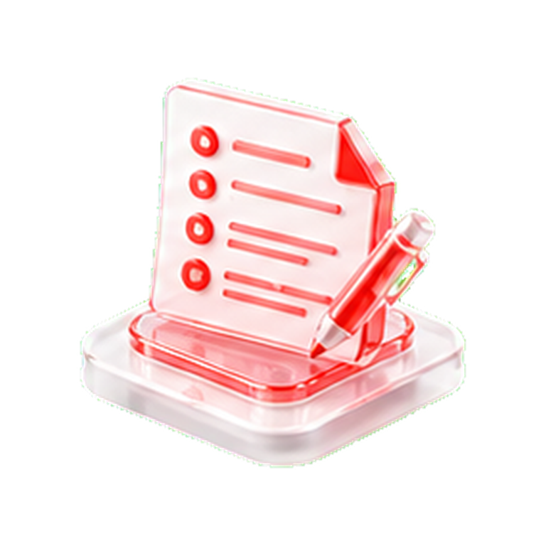

流程化从任务拆解到自动执行
知识化资料沉淀为可问答资产
可管控权限、日志、数据边界清晰
可迭代按业务反馈持续优化
先解决真实业务问题，再开发工具
AI工具开发不是简单接一个模型，而是把高频、规则清晰、可沉淀的数据流程，转化为稳定可用的业务能力。

重复事务消耗人力
咨询回复、通知提醒、材料整理和数据汇总依赖人工，团队时间被大量低价值事务占用。

服务响应不够及时
人工接待难以覆盖高峰时段，咨询跟进和线索分发容易延迟，影响转化与体验。

数据分析难以持续
表格、系统和聊天记录分散，统计口径不统一，复盘报告经常耗时且难复用。

知识经验沉淀不足
制度文档、FAQ、课程资料和项目经验分散，新人培训与跨团队协作成本偏高。
可落地的AI工具矩阵
结合业务流程、知识资料和系统边界，配置轻量工具、智能体或自动化工作流。
AI招生助手
自动接待咨询、识别意向、推荐课程方案，沉淀线索并生成跟进提醒。
预约免费体验智能客服
覆盖课程咨询、业务服务、常见问题与工单流转，支持人工转接。
预约免费体验
AI班主任助手
辅助通知提醒、家校沟通、学生跟进、考勤统计和成长记录管理。
预约免费体验教育课题AI助手
辅助课题选题、资料整理、技术路线、开题报告与结题材料撰写。
预约免费体验课堂AI教学助手
基于教学设计生成AI融合建议、工具选型、课堂活动与实施策略。
预约免费体验多步骤Agent流程
串联表单、知识库、通知、报表和第三方平台，形成自动执行流程。
预约免费体验课程学习助手
提供学习提醒、知识梳理、任务跟踪和个性化建议，提升培训参与度。
预约免费体验知识库问答助手
将制度、课程、项目文档转为可检索、可追溯的权限问答知识库。
预约免费体验把一个高频流程，先做成可用的 AI 工具
我们会从业务诊断开始，判断哪些环节适合 AI 介入，并给出工具形态、开发路径、数据准备和实施节奏建议。
从诊断到上线的开发路径
先把业务流程说清楚，再把 AI 能力接入到合适的工具界面与交付形态中。
业务诊断
梳理用户角色、任务节点、数据来源和评价指标。
流程设计
拆解自动化步骤、交互界面、权限规则和异常处理。
模型与工具选型
选择大模型、知识库、Agent框架和系统集成方式。
开发部署
完成前后端、提示词、数据接口、日志与测试验证。
培训交付
交付使用手册、管理员培训和业务人员操作培训。
持续优化
基于数据反馈迭代知识库、流程规则和工具体验。
适合优先启动的应用场景
从高频、规则明确、资料可用、效果可衡量的场景切入，能更快验证 AI 工具价值。
教育培训运营
招生咨询、课程推荐、用户维护、活动通知与服务回访。
学校教务管理
报名管理、学习提醒、教师发展材料归档与通知发布。
企业知识库
制度文档、产品资料、项目经验与内部 FAQ 的统一问答。

行政办公自动化
流程审批、通知公告、材料汇总、周报月报和数据统计。
按场景匹配交付形式
工具可独立部署，也可嵌入现有平台、表格流程、公众号、小程序或第三方 AI 工具链。